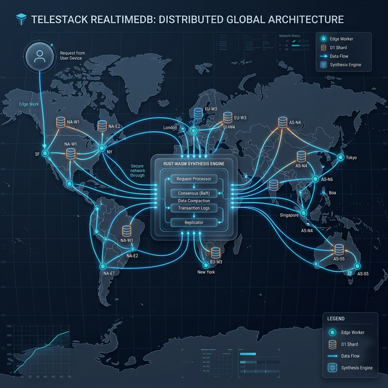

The Research Pain Points
Solving the fundamental bottlenecks of Edge Computing.
The Collision Problem
Traditional D1/SQLite databases suffer from "Database Locked" errors under high write contention. Scaling horizontally often results in 70% transaction failure rates.
Cold Start Latency
JavaScript-based authorization and cold starts add 50ms+ overhead. Telestack moves these computations to near-instantaneous WebAssembly.
Reactive Cache Lags
Standard LRU caches are reactive. In real-time apps, this leads to stale data. We needed a proactive, "hear-signal" driven caching system.
The Fundamental Invention
AENS: Adaptive Edge-Native State Synthesis.
Beyond Traditional Batching
AENS v2.0 isn't just batching writes. It uses a Feedback Control Loop to synthesize user intent in the Wasm Runtime before ever hitting the disk.
The Stability Equilibrium
$$T = \min\left( L_{max}, \frac{W_{base}}{\max(v, 1)} \cdot (1 + P) \cdot \ln(Q + 2) \right)$$
System Architecture
The Quad-Layer Hybrid Bridge.

Global Ingress: Geo-aware routing via Edge Workers.
Wasm Core: Near-zero latency Auth and CRDT merging.
Shadow Buffering: AENS synthesizes concurrent state.
Durable Commit: Single, atomic batch write to D1 Shards.